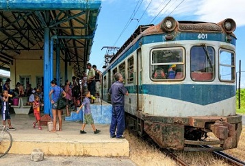
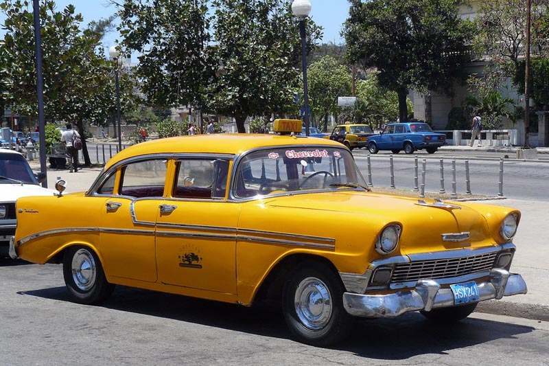

Getting around Cuba is easy. Besides the options listed below you can ride a bicycle (including on the highway), rent a car, ride a motocycle, or hop on a horse and shay. You will find all of these options whether you are in the city, on the highway or in the countryside.
Buses/Trains

There are intercity and multicity buses you can pay for. There are regular bus routes and bus stations. If you want to take a bus from one city to the next I would suggest booking in advance. Sometimes there are available seats but unless you are flexible do not count on it. There is a fast train between Havana and Santiago de Cuba as well as a few other regular trains to a couple destinations. The trains and buses so not run every day so make sure to check the schedule. The trains do not reach as many destinations as the buses either.
Taxis

Cubans who own a private car will want to be your personal taxi driver. It is more expensive than a bus or hitch hiking but you are gauranteed a ride and won't be sharing with strangers. Always agree to the price and distance before starting your trip. The private drivers are reliable and timely. While the cost may be the most expensive, relative to other countries it can still be very reasonable. You can get a taxi or ride in a few ways. Ask the host of your Casa Particular, ask the front desk or your hotel, flag on on the street or make a friend. Somebody will find you someone who will drive you.
Hitch hiking

Hitchhiking is the most common form of transportation in Cuba for Cubans and foreigners. Hitch hikers line the roads or stand under bridges. Cubans will most likely get a free ride but if you wave your hand holding money you are more likely to get someone to stop. There are official hitch hiking "stops" called Puntos Amarillos where officers wearing yellow will flag cars down for you. Cars will stop for people but so will large trucks and buses in which many people can get in. None of these methods are guaranteed and sometimes you have to wait a long time but it is relatively reliable and will get you to more places.